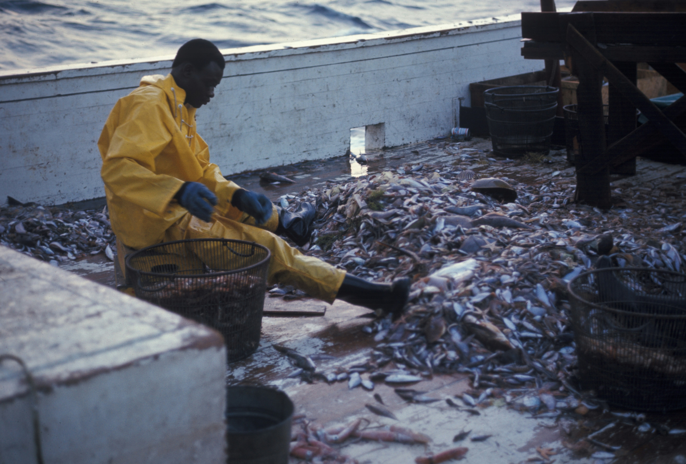
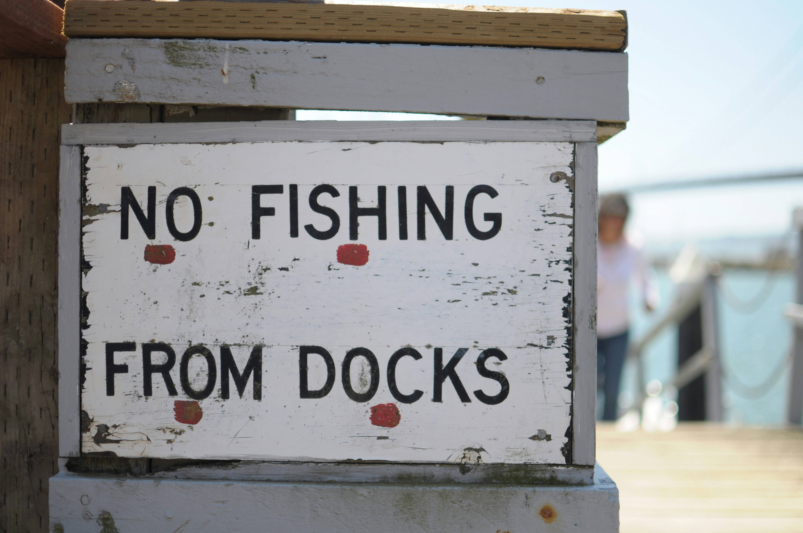

The Emptying Oceans: Understanding the Crisis of Overfishing
Exploring the threat to our oceans and the coastal communities that depend on them.
Introduction

The ocean covers over 70% of our planet's surface, acting as the heart of the global climate system and providing food and livelihoods for billions of people. However, beneath the waves, a quiet crisis is unfolding. Overfishing occurs when humanity catches fish at a rate much faster than they can naturally reproduce, disrupting the delicate balance of marine ecosystems
Today, the situation has reached an alarming tipping point. According to the UN Food and Agriculture Organization, more than a third of the world's assessed fish stocks are currently being fished at biologically unsustainable levels—a dramatic increase from just 10% in the 1970s. If we do not change our relationship with the sea, the consequences for both marine biodiversity and global food security will be devastating
Main Causes
What is driving this relentless depletion of our marine resources? The crisis is fueled by a combination of human appetite, technological power, and flawed economics:

- Rising Demand and Overcapacity: As the global human population surges, the demand for seafood has skyrocketed, rising twice as fast as the population itself. To meet this demand, the worldwide fishing fleet has ballooned to roughly four million vessels, creating an "overcapacity" that is up to two-and-a-half times larger than what is actually needed to catch what we sustainably require
- Destructive Fishing Technology: Modern industrial fishing relies on technological advancements like powerful factory trawlers equipped with radar and sonar, allowing fleets to pursue fish deeper and longer than ever before. Methods such as bottom trawling drag heavy, weighted nets across the seabed. This not only scoops up massive amounts of unwanted marine life but also clear-cuts vital habitats like seagrass meadows, which are essential carbon sinks
- Harmful Government Subsidies: Governments worldwide spend billions of taxpayer dollars annually to subsidize their fishing industries. These financial incentives offset the costs of fuel and vessel construction, encouraging massive industrial fleets to keep operating even when fish populations are too low to make economic sense
- Illegal Fishing: Illegal, Unreported, and Unregulated (IUU) fishing severely undermines conservation efforts. Criminal fishing operations frequently violate international laws, ignore quotas, and use banned equipment, costing the global economy billions of dollars each year
Coastal Impact

The ripple effects of overfishing do not stop at the water's edge; they hit coastal and local communities the hardest.
- Loss of Livelihoods: When fish stocks collapse, the human toll is immense. A stark historical example is the 1992 collapse of the Canadian Grand Banks cod fishery, which erased over 35,000 jobs across more than 400 coastal communities practically overnight. Furthermore, artisanal, small-scale fishers—who rely on the ocean for basic survival and cultural identity—are increasingly unable to compete with heavily subsidized industrial fleets that drain their local waters
- Threats to Food Security: For over three billion people, particularly in developing nations, the ocean provides a primary source of animal protein. As local fish populations vanish, these coastal communities face severe threats to their nutritional health and socio-economic stability.
- Ecological Degradation: Overfishing ravages coastal ecosystems. "Bycatch"—the unintended capture of non-target species—leads to the needless deaths of endangered sea turtles, dolphins, and sharks. Additionally, removing too many fish disrupts the entire food chain, which can trigger excessive algal blooms that suffocate marine life and damage vital coastal habitats like coral reefs
Solutions
While the scale of the problem is massive, it is not unsolvable. Reversing the tide requires immediate, coordinated action across governments, industries, and consumers:

- Ending Harmful Subsidies: One of the most urgent global steps is for international bodies, such as the World Trade Organization (WTO), to establish binding agreements that eliminate the subsidies driving overcapacity and IUU fishing. Redirecting these public funds toward sustainable fisheries and ocean conservation could help heal marine ecosystems
- Establishing Marine Protected Areas (MPAs): Creating fully protected, no-take marine reserves gives fish populations the safe havens they need to recover and grow. Over time, thriving fish populations "spill over" into adjacent waters, replenishing broader regions. Banning destructive practices like bottom trawling within these protected areas is crucial for habitat recovery
- Sustainable Management and Aquaculture: Implementing strict, science-based catch limits and switching to more selective fishing gear can dramatically reduce bycatch and allow stocks to naturally rebuild. Additionally, responsibly managed aquaculture (fish farming) that carefully monitors water quality and limits chemical use can help meet the global demand for seafood without further depleting wild populations
By combining strict regulations, conservation efforts, and conscious consumer habits, we can restore the abundance of our oceans and secure a sustainable future for the billions of people who depend on them.